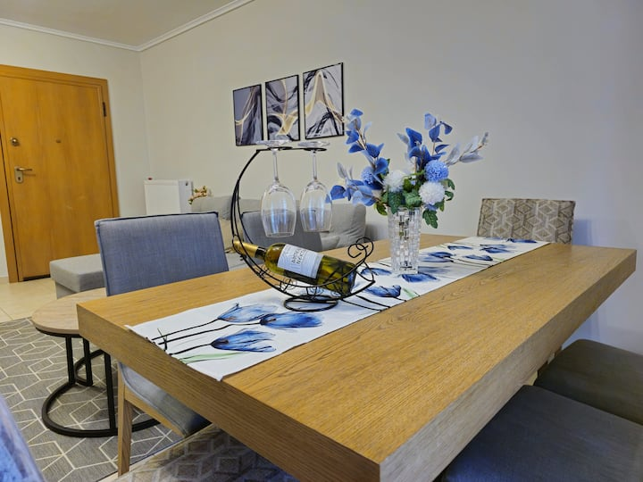
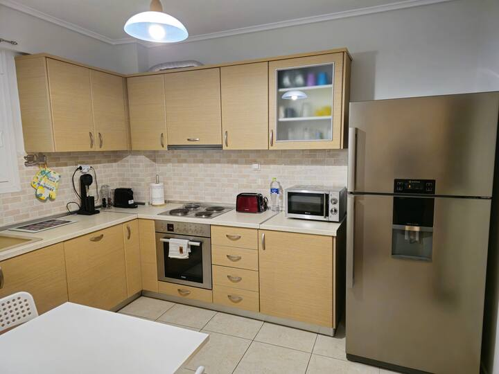

O smeštaju
do 5 osoba · 2 spavaće sobe · 2 kreveta · 1 kupatilo · 87 m²
Prostran, svetao stan od 87 m² u Pilei, u mirnom kraju blizu obilaznice, nekoliko minuta kolima od centra Soluna.
Veliki dnevni boravak sa velikom ugaonom garniturom, na kojoj se može i spavati, velikim televizorom i trpezarijskim stolom. Potpuno opremljena kuhinja sa rernom, pločom, frižiderom, mikrotalasnom, mašinom za sudove i aparatom za kafu.
Dve spavaće sobe sa bračnim krevetima i mnogo ormara, kao i kutak sa radnim stolom.
Kupatilo sa kadom i odvojen toalet. Mašina za pranje i mašina za sušenje veša.
Balkon sa stolom i stolicama, centralno grejanje i klima-uređaj.
Sadržaji
- Balkon
- Wi-Fi
- Klima-uređaj
- Grejanje
- Televizor
- Potpuno opremljena kuhinja
- Nespresso aparat
- Rerna i mikrotalasna
- Mašina za sudove
- Mašina za veš
- Mašina za sušenje veša
- Radni sto
- Posteljina
- Peškiri za kupanje i lice
- Šampon i gel za tuširanje
- Parking
- Lift
- Kućni ljubimci na zahtev
- Bebi krevetac besplatno
Lokacija
Stadiou 46, 555 35 Pylaia